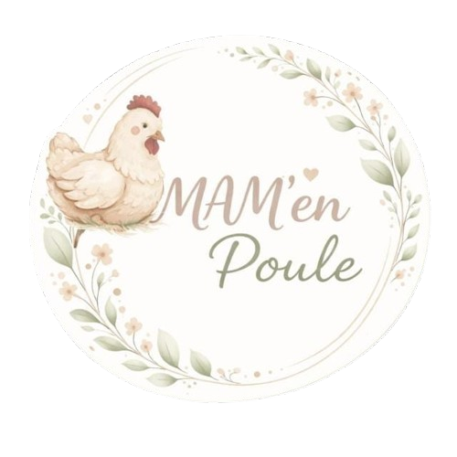
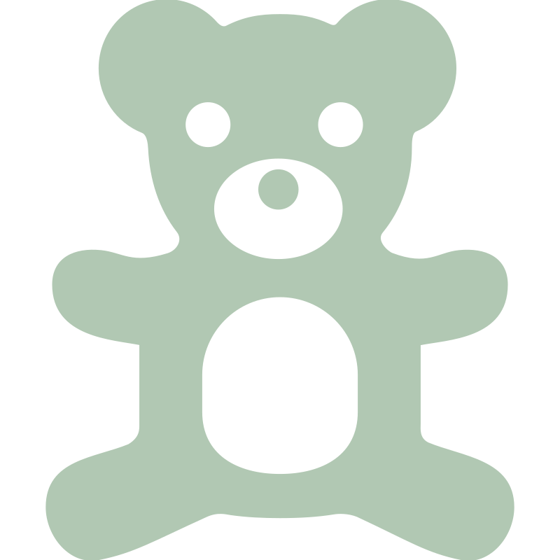

Stephanie
Assistante Maternelle AgrééeATSEM en école maternelle depuis 25 ans.

Des professionnelles passionnées et diplômées pour veiller sur vos tout-petits au quotidien.
ATSEM en école maternelle depuis 25 ans.
Professeure des écoles en maternelle depuis 25 ans.
La MAM’ en poule, c’est avant tout l’histoire d’une amitié de longue date et d’une passion commune : la petite enfance. Après toutes ces années à voir grandir les enfants en milieu scolaire et familial, nous avons eu envie de revenir à l’essentiel : les toutes premières années, celles où tout se joue.
Le nom "La MAM’ en poule" nous a semblé une évidence : il symbolise la protection, la chaleur et cette attention de chaque instant que nous portons aux petits qui nous sont confiés.
Notre souhait est de travailler en harmonie autour d’un projet commun qui nous tient à cœur. Il nous semble indispensable d’avoir une bonne cohésion d’équipe et d’avoir une cohérence dans nos pratiques (temps d’échange, réunions de coordination, préparation des plannings...en dehors du temps d’accueil des enfants)
Nous nous engageons également dans une démarche de formation continue.

Matériel adapté
Mobilier à hauteur d'enfant et matériel d'éveil adapté.
Sécurité optimale
Un cadre protégé pour explorer le monde sereinement.
Espace extérieur
Ateliers nature et jeux de plein air au fil des saisons.